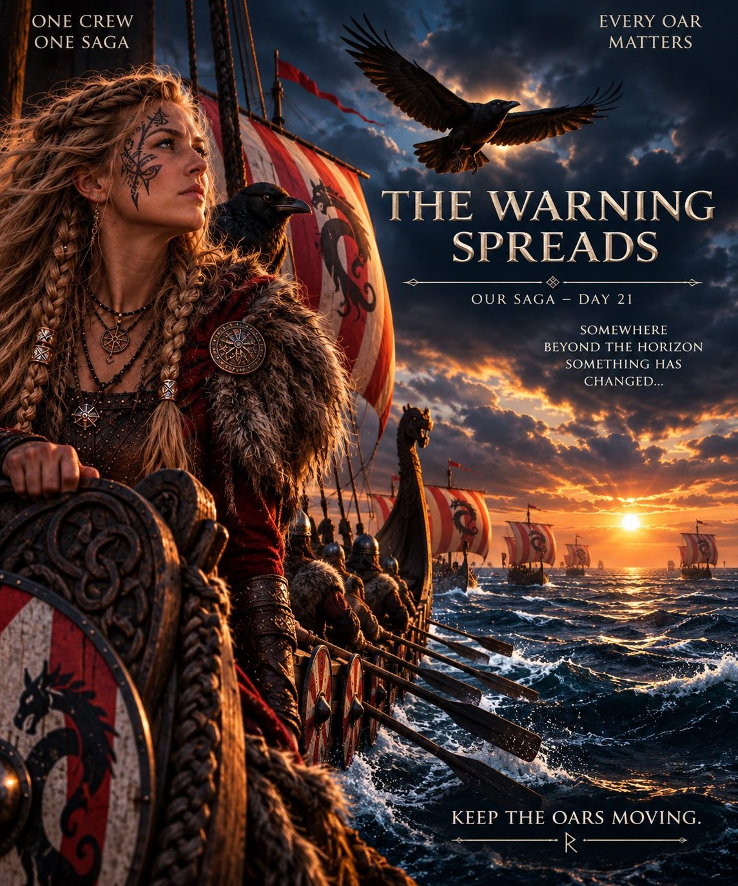

DAY 21
The fleet crossed the halfway mark in Chapter III — and a warning began to spread.

HALFWAY — BUT SOMETHING STIRS
95 Vikings carried the voyage to 37,954,948 steps — approximately 24,670.7 km.
The fleet had crossed the halfway line: 50.61% of the 75,000,000-step goal.
Yet the horizon no longer felt empty. A raven reached the Captain. Þóra sensed a warning. The crews stayed alert and kept the oars moving.
ROW ON.
STAY READY.
— Captain Hákon
THE WARNING SPREADS
Þóra warned Hákon that the ravens sensed something beyond the horizon had changed. Hugin stayed with the Captain while Munin remained with the Keeper and the runestones.
No one yet knew whether the danger was man, monster, wind or water.
KEEP THE OARS MOVING.

THEIR NAMES ENTER THE SHIP'S ROLL
Fred → Auðun (Auðunn) · ᛅᚢᚦᚢᚾ · 366,088
Jagadish → Einar (Einarr) · ᛅᛁᚾᛅᚱ · 166,475
Ana → Ragna (Ragna) · ᚱᛅᚴᚾᛅ · 186,537